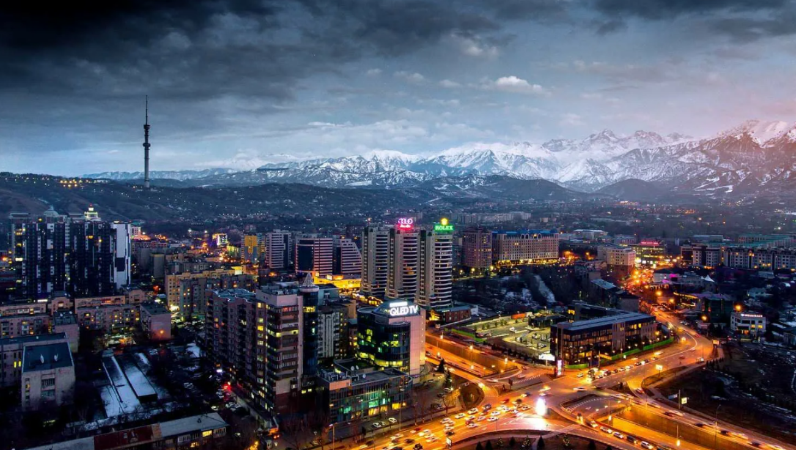

Юго-Восточный Казахстан
НазадАлматы — крупнейший город Казахстана и бывшая столица страны, расположенный у подножия Заилийского Алатау. Основанный в 1854 году, он обладает богатой историей и культурным наследием, став важным экономическим и образовательным центром региона. Город известен своей живописной природой: в окрестностях Алматы находятся горнолыжные курорты, такие как Чимбулак, а также уникальные природные памятники, включая ущелье Алмалы и озеро Большое Алматинское. Алматы также славится множеством парков и зеленых зон, таких как парк имени 28 гвардейцев-панфиловцев. Культурная жизнь города разнообразна: здесь расположены театры, музеи и художественные галереи, такие как Центральный государственный музей Казахстана и театр оперы и балета имени Абая. Алматы также является центром образования с множеством вузов и исследовательских институтов. В последние годы город активно развивается, предлагая жителям современные удобства, такие как торговые центры, рестораны и развлекательные комплексы, что делает его привлекательным местом для жизни и туризма.
